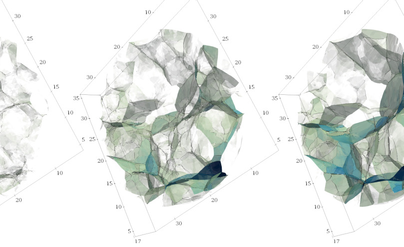

Literate programming /ˈlɪtəɹət ˈpɹəʊɡɹæmɪŋ/ (computing) Literate programming is a programming paradigm introduced by Donald Knuth in which a program is given as an explanation of the program logic in a natural language, such as English, interspersed with snippets of macros and traditional source code, from which a compilable source code can be generated. (Wikipedia)
Literate programming is awesome! Write your documentation and code in one markdown document, tangle the source code from that document, compile and run your code. This is all fine if your code does not contain any bugs. But what if it does? Your compiler and debugger may point to locations in the source where things go wrong. But you cannot edit those sources directly, since you generated them from the mother document!
Enter enTangleD! This monitors the tangled source files and reflects any change in master document or source files to the other.
The markdown file is still the master document.
enTangleD is working, but still in a alpha stage. It has been tested Linux, and Windows and should work on MacOS equally well. If you edit anything serious with the enTangle Daemon running, I strongly recommend using version control and commit often. If you encounter unexpected behaviour, please post an issue and describe the steps to reproduce.
Features:
Makefile to generate reportTodo:
Hello World in C++: Teaches the basics of literate programming using Markdown and fenced code blocks. Also shows how to use a BibTeX file for references.
99-bottles in C++: Over-engineered song-text generator. Teaching how to setup a basic C++ program with enTangleD, use of ArgAgg to parse command-line arguments, use of FmtLib to do string formatting and setting up a slightly non-basic Makefile.
Slasher: a browser game written in Elm. A dashing hero is zipping across the screen, only deflected by slashes and backslashes. The game works, but the source may need some more literacy in some places.
 Adhesion code: presenting the cosmological adhesion model and its implementation in C++ and CGAL.
enTangleD is written in Haskell, and uses the stack build system. You can build an executable by running
stack buildIf this is the first time you run stack, this may take a while. Install the executable in your ~/.local/bin
stack installRun unit tests
stack testThere are several tools included in the enTangleD distribution:
entangled: the main binaryscripts/weave: a bash script for creating HTML or PDF output using Pandoc.scripts/tangle: a bash script for tangling sources other than through using entangled, this too uses Pandoc.The markdown syntax enTangleD uses is compatible with Pandoc’s. This relies on the use of fenced code attributes. To tangle a code block to a file:
Composing a file using multiple code blocks is done through noweb syntax. You can reference a named code block in another code block by putting something like <<named-code-block>> on a single line. This reference may be indented. Such an indentation is then prefixed to each line in the final result.
A named code block should have an identifier given:
If a name appears multiple times in the source, the code blocks are concatenated during tangling. When weaving, the first code block with a certain name will appear as <<name>>=, while consecutive code blocks with the same name will appear as <<name>>+=.
Please see the Hello World and other examples!
In the source code we know exactly where the code came from, so there would be no strict need for extra syntax there. However, once we start to edit the source file it may not be clear where the extra code needs to end up. To make our life a little easier, named code blocks that were tangled into the file are marked with a comment at begin and end.
These comments should not be tampered with!
entangledAssuming you have created a Markdown file, say program.md, you can start entangled by running
entangled ./program.mdin the shell. You may run entangled --help to get help on options, but currently there are none.
tangleThe tangle script depends on a recent version of Pandoc being installed, as well as rsync.
weaveNext to Pandoc, weave requires the pandoc-fignos, pandoc-eqnos and pandoc-citeproc filters to be installed. pandoc-citeproc is distributed with Pandoc, however in some GNU/Linux it resides in a separate package. For pandoc-fignos and pandoc-eqnos make sure you have Python and pip installed, and run
pip install --user pandoc-fignos pandoc-eqnosIf you want to create PDF output, you’ll also need a LaTeX distribution installed.
If you’ve written a literate code using enTangleD and would like to distribute it, one way is to include the tangled source code in the tar ball. The other way is to include the scripts folder in your repository. You may want to check out the tangle and weave scripts, include a different LaTeX theme or play with style.css.
 Find us on Github
Find us on Github